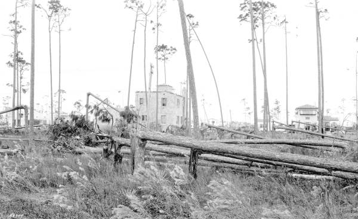

Directions: Use the figures, the photograph, and the background notes to answer the questions.
1. Wheat averaged about $2.16 a bushel in 1919, about $1.03 in 1921, and about $1.04 in 1929. The McNary-Haugen bills, which would have supported crop prices, passed Congress in 1927 and 1928 and were vetoed both times. In two sentences, state the farm problem. Use the word overproduction, and name who vetoed the bills.
2. Union membership fell from about five million in 1920 to about three and a half million in 1929. Name two employer tools behind that decline, one from the open shop drive and one from welfare capitalism or company unions, and explain how each one weakened independent unions.

3. Coral Gables was built by the Florida land boom, in which buyers purchased lots on small binder payments expecting to resell them quickly at a profit. The boom collapsed in 1926, before the hurricane struck. Explain why the collapse of this boom should have warned stock buyers in 1929. Name the practice the two booms shared.
4. The people in the photograph are standing outside the exchange, not trading inside it. What had happened that day, how many shares were traded, and why is it wrong to say that this day by itself wiped out most American families' savings?
1. State the farm problem, using overproduction, and name who vetoed the McNary-Haugen bills. Farmers expanded production during the war and kept producing at that level after demand fell, so overproduction held prices down all decade: wheat fell from about $2.16 a bushel in 1919 to about $1.03 in 1921 and was still only about $1.04 in 1929, while debts stayed at wartime levels. President Calvin Coolidge vetoed the McNary-Haugen bills in 1927 and 1928. (Blueprint 12)
2. Name two employer tools behind the decline of union membership, and explain how each weakened independent unions. Any one from each group, explained. Open shop drive: employers hired without requiring union membership, often only if a worker promised not to join a union, and courts backed them with injunctions against strikes, so unions lost members and their main weapon. Welfare capitalism and company unions: employers offered pensions, vacations, and stock plans so workers would feel provided for without a union, and company unions gave workers an employer financed organization that could discuss grievances but could not bargain independently or strike. Membership fell from about five million in 1920 to about three and a half million in 1929. (Blueprint 13)
3. Why should the collapse of the Florida boom have warned stock buyers in 1929, and what practice did the two booms share? Florida land prices rested on expected resale, not on the value of the land, and on small down payments with the rest owed. When new buyers stopped arriving in 1926, prices collapsed and the banks that had lent on land failed, three years before the same pattern ran in stocks. The shared practice was speculation bought with borrowed money and a small down payment: binder payments on land in Florida, and buying on margin in the stock market. In both, a price fall left the buyer owing more than the asset would sell for. (Blueprint 14)
4. What had happened on the day of the photograph, how many shares were traded, and why is it wrong to say this day alone wiped out most families' savings? The photograph shows the crowd outside the New York Stock Exchange on Black Tuesday, October 29, 1929, the heaviest selling day of the crash, when about 16.4 million shares were traded and leading stocks lost roughly an eighth of their remaining value. It is wrong to say the day wiped out most families' savings because only a small minority of Americans owned stock, by most estimates a few percent of the population. The crash destroyed speculators, confidence, and credit; the decade of depression that followed required bank failures, collapsing demand, and later policy choices as well. (Blueprint 15)
Teacher note. This check is formative. Question 1 is the recall floor. Question 3 predicts success on the writing task, because it asks students to transfer the Florida pattern to margin buying before they write. Question 4 tests the distinction the unit test will enforce between the crash and the Depression.